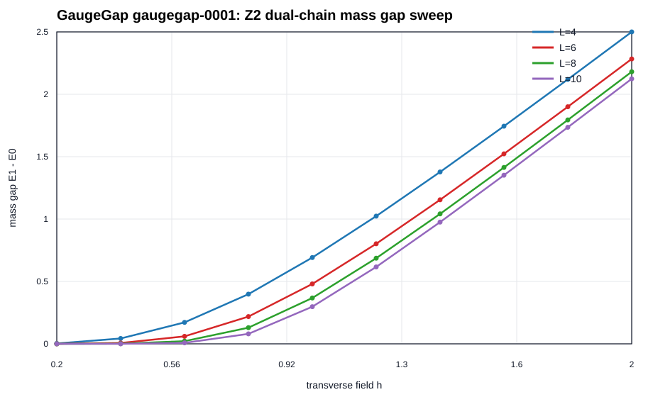
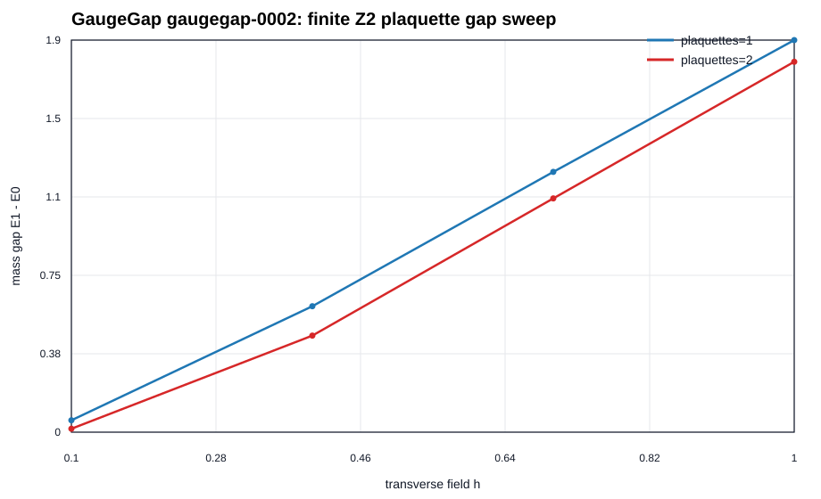
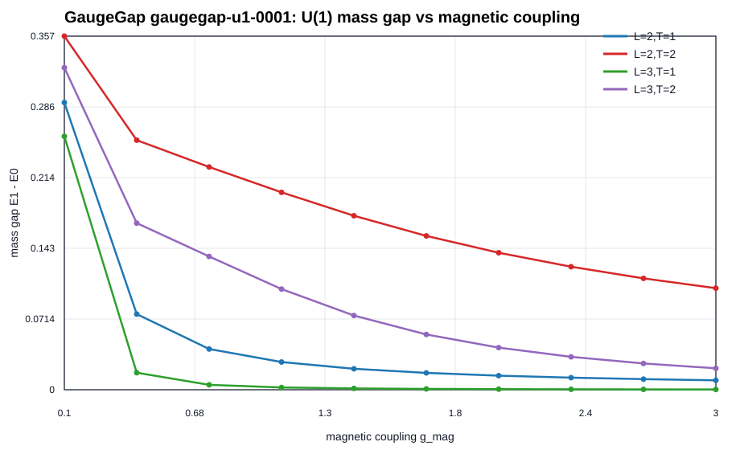
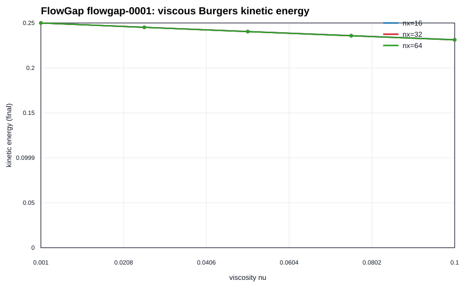
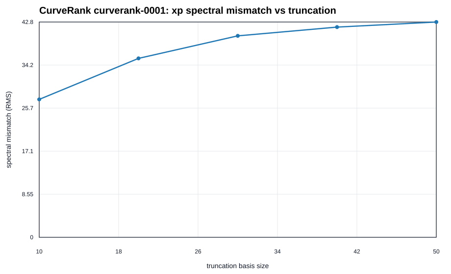
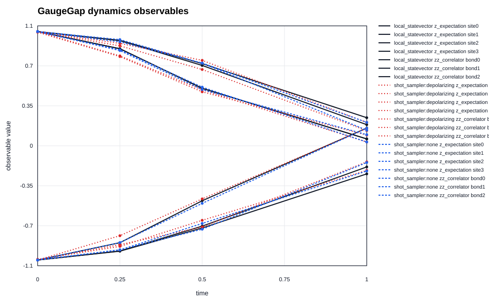

Verification-first finite lattice benchmark infrastructure for AI-guided physics research. Three tracks targeting three Millennium-adjacent domains.
In plain terms: a small lab that runs careful, checkable physics experiments toward three famous unsolved problems — and stays honest about what it has and hasn’t shown.
Claim boundary: All results shown here are finite-system benchmarks only. This project does not claim to solve or prove the Yang-Mills mass gap, Navier-Stokes regularity, or the Riemann hypothesis. Acceptable outputs are finite-size trends, reproducible baselines, and benchmark-quality datasets.
AI-guided, verification-first finite-lattice gauge-theory experiments around mass gaps, confinement-adjacent observables, and string-breaking dynamics. Models: Z2 dual-chain, Z2 plaquette chain, U(1) compact lattice.
Finite reduced-model benchmarks using viscous Burgers surrogates and pressure-Poisson subroutines, with hybrid quantum-classical comparison on tiny grids. Includes VQLS-style simulation benchmark.
Spectral screening of truncated Hilbert-Polya candidate operators against known Riemann zeta zeros, with GUE spacing statistics and truncation stability analysis.

Z2 dual-chain mass-gap sweep. Exact dense diagonalization across transverse field strengths for lattice sizes L=4, 6, 8, 10.

Finite Z2 open-plaquette-chain benchmark. Ground-state observables (mean plaquette-Z, mean link-X) across transverse fields for 1 and 2 plaquettes.

U(1) compact lattice gauge model. Mass-gap estimates across coupling strengths for small finite lattices.

Viscous Burgers PDE reduced-model benchmark. Classical finite-difference dynamics with kinetic energy decay and grid convergence.

Spectral screening of toy Hilbert-Polya candidate operators. Eigenvalue mismatch trends vs truncation order against known Riemann zeta zeros.

Cross-backend comparison: exact statevector vs Aer shot sampling vs depolarizing noise. Z-site and nearest-neighbor ZZ observables through Trotter circuit evolution.
Where quantum tooling is actually used in this project. Real hardware begins only when a validated circuit is submitted to a provider runtime with recorded job ID, backend, shots, and calibration context.
Every result follows a seven-step verification ladder: